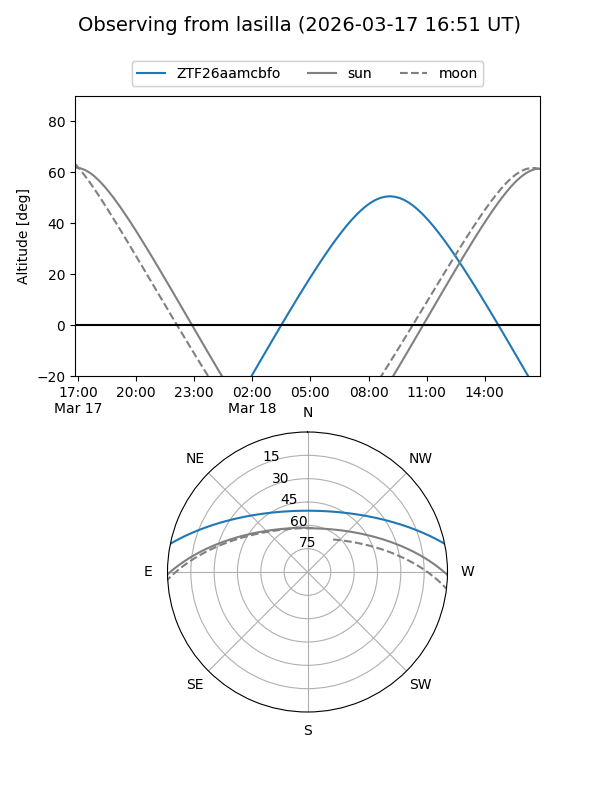
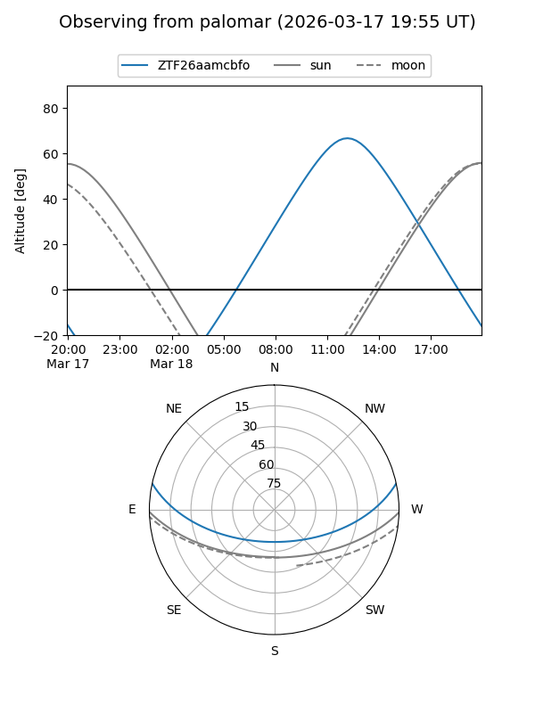

ZTF26aamcbfo
Target ZTF26aamcbfo at 2026-03-18 14:08
Aliases and brokers:
FINK: link
Lasair: link
ALeRCE: link
alt names
ZTF26aamcbfo (ztf,fink_ztf)
Coordinates:
equatorial (ra, dec) = 241.3936,+10.21789
equatorial (HMS+DMS) = 16:05:34.47,+10:13:04.39
galactic (l, b) = (22.2372,+41.36609)
Flags:
Photometry:
last ztfg=17.58
1 ztfg detections
Lightcurve
Visibility


Additional plots